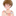

🎉 Favicon 测试成功！
✅ 恭喜！您的favicon已经成功设置！
现在您应该能在浏览器标签页看到您的头像作为网站图标了。
Favicon 预览
标准 Favicon (32x32)

小尺寸 (16x16)
中等尺寸 (32x32)
Apple 图标 (180x180)
🔧 已完成的工作
- ✅ 从您的头像 (cubxxw-image.jpg) 创建了多种尺寸的favicon
- ✅ 生成了标准的 favicon.ico 文件
- ✅ 创建了 16x16 和 32x32 的PNG格式图标
- ✅ 生成了 Apple Touch Icon (180x180)
- ✅ 配置文件已正确设置favicon路径
- ✅ 所有favicon文件都已放置在正确的位置
📱 支持的设备和浏览器
- 🖥️ 桌面浏览器 (Chrome, Firefox, Safari, Edge)
- 📱 移动设备浏览器
- 🍎 iOS Safari (Apple Touch Icon)
- 📑 浏览器书签
- 🏠 添加到主屏幕
💡 提示： 如果您在浏览器中看不到favicon，请尝试：
- 刷新页面 (Ctrl+F5 或 Cmd+Shift+R)
- 清除浏览器缓存
- 关闭并重新打开浏览器标签页